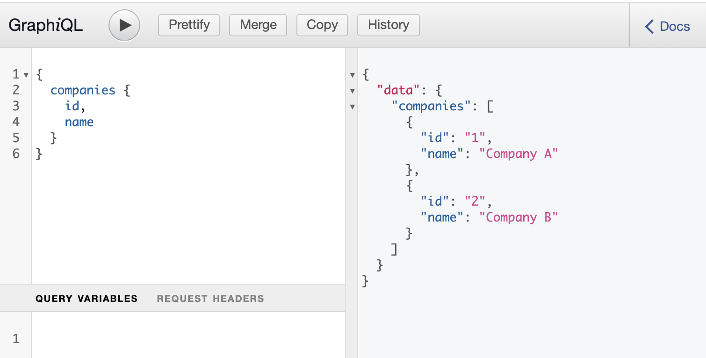

Spring GraphQL server based on webflux - Part 2 - Spring GraphQL on Webflux
Retro
In Part 1 we introduced the general topics of reactive programming, webflux, GraphQL and R2DBC.
Spring starter
Let’s start with a standard Spring start setup.
- Project: Maven
- Language: Java (17)
- Spring: 2.6.0 (RC1)
Dependencies:
- Lombok
- Spring reactive web
- Spring Data R2DBC
- H2 Database
The Maven pom.xml looks now like this:
<?xml version="1.0" encoding="UTF-8"?>
<project xmlns="http://maven.apache.org/POM/4.0.0" xmlns:xsi="http://www.w3.org/2001/XMLSchema-instance"
xsi:schemaLocation="http://maven.apache.org/POM/4.0.0 https://maven.apache.org/xsd/maven-4.0.0.xsd">
<modelVersion>4.0.0</modelVersion>
<parent>
<groupId>org.springframework.boot</groupId>
<artifactId>spring-boot-starter-parent</artifactId>
<version>2.6.0-RC1</version>
<relativePath/> <!-- lookup parent from repository -->
</parent>
<groupId>com.example</groupId>
<artifactId>demo</artifactId>
<version>0.0.1-SNAPSHOT</version>
<name>demo</name>
<description>Demo project for Spring Boot</description>
<properties>
<java.version>11</java.version>
</properties>
<dependencies>
<dependency>
<groupId>org.springframework.boot</groupId>
<artifactId>spring-boot-starter-data-r2dbc</artifactId>
</dependency>
<dependency>
<groupId>org.springframework.boot</groupId>
<artifactId>spring-boot-starter-webflux</artifactId>
</dependency>
<dependency>
<groupId>com.h2database</groupId>
<artifactId>h2</artifactId>
<scope>runtime</scope>
</dependency>
<dependency>
<groupId>io.r2dbc</groupId>
<artifactId>r2dbc-h2</artifactId>
<scope>runtime</scope>
</dependency>
<dependency>
<groupId>org.projectlombok</groupId>
<artifactId>lombok</artifactId>
<optional>true</optional>
</dependency>
<dependency>
<groupId>org.springframework.boot</groupId>
<artifactId>spring-boot-starter-test</artifactId>
<scope>test</scope>
</dependency>
<dependency>
<groupId>io.projectreactor</groupId>
<artifactId>reactor-test</artifactId>
<scope>test</scope>
</dependency>
</dependencies>
<build>
<plugins>
<plugin>
<groupId>org.springframework.boot</groupId>
<artifactId>spring-boot-maven-plugin</artifactId>
<configuration>
<excludes>
<exclude>
<groupId>org.projectlombok</groupId>
<artifactId>lombok</artifactId>
</exclude>
</excludes>
</configuration>
</plugin>
</plugins>
</build>
<repositories>
<repository>
<id>spring-milestones</id>
<name>Spring Milestones</name>
<url>https://repo.spring.io/milestone</url>
<snapshots>
<enabled>false</enabled>
</snapshots>
</repository>
</repositories>
<pluginRepositories>
<pluginRepository>
<id>spring-milestones</id>
<name>Spring Milestones</name>
<url>https://repo.spring.io/milestone</url>
<snapshots>
<enabled>false</enabled>
</snapshots>
</pluginRepository>
</pluginRepositories>
</project>
Adding Spring GraphQL
The Spring GraphQL Team added a Spring starter project:
<dependencies>
// Spring GraphQL Boot starter
<dependency>
<groupId>org.springframework.experimental</groupId>
<artifactId>graphql-spring-boot-starter</artifactId>
<version>1.0.0-M3</version>
</dependency>
<!-- ... -->
</dependencies>
<!-- For Spring project milestones or snapshot releases -->
<repositories>
<repository>
<id>spring-milestones</id>
<name>Spring Milestones</name>
<url>https://repo.spring.io/milestone</url>
</repository>
<repository>
<id>spring-snapshots</id>
<name>Spring Snapshots</name>
<url>https://repo.spring.io/snapshot</url>
<snapshots>
<enabled>true</enabled>
</snapshots>
</repository>
</repositories>
After adding this to the project we can start the implementation.
Schema creation
Following the schema first principle we will first add a GraphQL query for fetching companies:
type Query {
companies: [Company]
}
type Company {
id: ID
name: String
}
The type “Query” is the root for all GraphQL queries (for more details see The Query and Mutation types). The type companies will return a list of items of the type Company.
Company itself has two attributes:
- ID => Numeric identifier of the company
- name => The name of the company
This schema will be stored in the file schema.graphqlsin the folder src/main/resources/graphql.
GraphQL Controller
The controller can simply be added by adding a @Controller annotation to the class. The most simple way to add the endpoint is to create a method inside this class with the same name like the name in the Query block of the schema: companies
This method will be annotated with @QueryMapping:
package arne.kroeger.springgraphqlwebfluxtestproject;
import org.springframework.data.annotation.Id;
import org.springframework.graphql.data.method.annotation.QueryMapping;
import org.springframework.stereotype.Controller;
import reactor.core.publisher.Flux;
@Controller
public class CompanyController {
@QueryMapping
public Flux<Company> companies() {
return Flux.just(new Company(1L, "Company A"), new Company(2L, "Company B"));
}
}
record Company(@Id Long id, String name) {
}
If you need more details on how to handle Reactor types like Flux and Mono check out the following links:
GraphiQL editor
The GraphiQL editor allows an easy access to the created API and delivers query editor, documentation and formatting options.
It is automatically delivered with the Spring GraphQL starter via the url http://localhost:8080/graphiql.

Summary
What we have achieved:
- Setup of the Maven project via Spring starter
- Adding experimental Spring GraphQL starter to the project
- Creation of a GraphQL schema
- Implementing a GraphQL Query endpoint as a Spring controller
In Part 3 we will connect the Controller to the database via R2DBC.
Comments